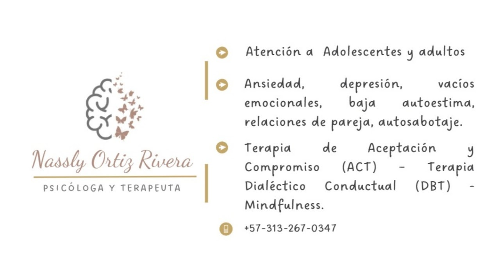

Acompañamiento emocional desde la Aceptación, el Compromiso y la Presencia
Soy Nassly Ortiz, psicóloga clínica con experiencia en terapia cognitivo-conductual y terapias de tercera generación (ACT, DBT). Acompaño a personas que viven ansiedad, vacío emocional, baja autoestima, dependencia afectiva o relaciones dolorosas a reconectar consigo mismas y construir una vida más ligera, consciente y significativa.

Brindo acompañamiento psicológico 100% online, adaptado a las necesidades de cada persona, desde un enfoque cognitivo–conductual y las terapias de tercera generación (ACT y DBT).
Cada proceso se desarrolla en un espacio seguro, confidencial y empático, donde el objetivo es ayudarte a comprender tu historia, gestionar tus emociones y construir bienestar desde el presente.
Espacio terapéutico enfocado en la exploración de emociones, pensamientos y comportamientos que pueden estar generando malestar.
Se trabaja en el fortalecimiento de habilidades para la regulación emocional, la toma de decisiones conscientes y el autoconocimiento.
Dirigido a personas que viven con síntomas de ansiedad, tristeza profunda o desmotivación.
El proceso busca identificar las causas del malestar emocional, adquirir herramientas para afrontarlo y recuperar el equilibrio psicológico.
Terapia enfocada en experiencias que generan reacciones intensas o dificultades para manejar emociones.
Desde un trabajo compasivo y gradual, se busca resignificar la historia personal y fortalecer la sensación de seguridad interna.
Espacio para revisar patrones emocionales que se repiten en los vínculos de pareja, familiares o laborales.
El objetivo es aprender a relacionarse desde la autenticidad, la empatía y la comunicación asertiva.
Proceso orientado a desarrollar flexibilidad psicológica, aceptar lo que no puede cambiarse y comprometerse con acciones alineadas a los valores personales.
Ideal para personas que buscan mayor sentido, claridad y bienestar en su vida cotidiana.
Enfoque basado en la validación emocional, el mindfulness y la construcción de habilidades para gestionar impulsos, emociones y relaciones complejas.
Recomendada para personas que experimentan cambios emocionales intensos o conductas autodestructivas.
Soy psicóloga con enfoque cognitivo–conductual y terapias de tercera generación, como la Terapia de Aceptación y Compromiso (ACT) y la Terapia Dialéctico Conductual (DBT), con práctica de siete años en consulta.
Acompaño a adolescentes y adultos que atraviesan procesos de ansiedad, depresión, vacío emocional, desregulación afectiva o dificultades en sus relaciones personales.
Mi propósito es ofrecer un espacio seguro, empático y sin juicios, donde puedas comprender tu historia emocional, aprender a mirar con compasión tus experiencias y construir bienestar desde el presente.
Creo firmemente que sanar no siempre implica olvidar el pasado, sino reconciliarte con él para avanzar con mayor claridad, aceptación y sentido.
En este espacio encontrarás escucha, guía y acompañamiento para reencontrarte contigo misma(o) y comenzar a vivir desde la calma y la autenticidad.
Un espacio seguro, cálido y humano donde:
Crisis, síntomas físicos, pensamientos difíciles, miedo constante, sensación de perder el control.
Cuando sientes que “no eres tú”, que nada te llena o que te cuesta habitar el presente.
Miedo a fallar, criticarte demasiado, compararte, sentir que no eres suficiente.
Patrones repetitivos, dependencia emocional, desgaste, dificultad para poner límites.
Acompañamiento para comprender tu historia y resignificarla desde el presente.
Cada proceso terapéutico es único. El acompañamiento se adapta a tu historia, ritmo y necesidades, con el propósito de guiarte hacia una vida más consciente, estable y coherente contigo misma(o).
Podemos hablar y encontrar el acompañamiento que necesitas.
Contactar por WhatsApp